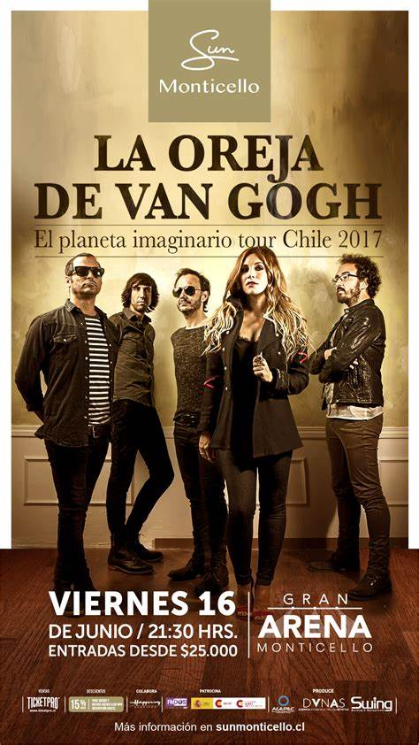

La Oreja de Van Gogh (abreviado en ocasiones como LOVG o LODVG) es un grupo musical de género pop-rock originario de San Sebastián, País Vasco, España. Su trayectoria en el mundo de la música comenzó formalmente en 1996. La banda está formada por Pablo Benegas, Álvaro Fuentes, Xabi San Martín, Haritz Garde y Leire Martínez, aunque la vocalista durante los primeros once años fue Amaia Montero, quien en 2007 dejó la formación para iniciar su carrera como solista. Son una banda con éxito en España, Latinoamérica y Estados Unidos con lanzamientos y conciertos puntuales en países que no son de habla hispana, como Francia,[cita requerida] Reino Unido, Japón o Israel. Entre sus temas más destacados están: «Cuéntame al oído», «La playa», «20 de enero», «Rosas», «El último vals», entre otros. Han obtenido premios como el Grammy Latino, MTV Europe Music Awards, Premios Ondas, Premios de la Música, Premio Lo Nuestro, la Gaviota de Plata del Festival Internacional de la Canción de Viña del Mar, entre muchos otros. Según acreditan los Productores de Música de España (PROMUSICAE), la banda cuenta con 3 260 000 álbumes certificados en su carrera musical solo en España.
 Antes de que Amaia Montero se uniera al resto de sus compañeros en 1996, ellos ya habían formado un grupo un año antes en la ciudad de San Sebastián. Pablo Benegas tocaba la guitarra, Álvaro Fuentes el bajo, Xabi San Martín el teclado y Haritz Garde la batería. Eran una banda de versiones de grupos ya conocidos como: U2, Pearl Jam, o Nirvana.[cita requerida] Tras intentar encontrar una vocalista entre sus conocidos, Pablo Benegas conoció a Amaia Montero en una cena de amigos. Después de oírla cantar, Pablo insistió para hacer una prueba con el grupo. Una vez finalizada la prueba, todos coincidieron en que debía ser la vocalista del grupo.[cita requerida] Con su incorporación, la formación decidió centrarse en conseguir un nombre, y al aparecer la historia de Vincent van Gogh y la mutilación de su oreja en una conversación, se decidieron por el nombre «La Oreja de Van Gogh».7 No fue hasta que se presentaron al Concurso Pop-Rock Ciudad de San Sebastián8 cuando componen su primera maqueta en la que se incluían tres temas en inglés (inéditos hasta la fecha); «Don’t let them», «One of these days» y «The Worst Nightmare», esta última la primera versión de lo que se convertiría en «Pesadilla» que formaría parte de su primer álbum; y también la inédita «Quisiera». A pesar de que fracasaron en su primer intento, la banda lo intentó de nuevo al año siguiente. Así fue como ganaron en 1997 el VI Concurso Pop-Rock Ciudad de San Sebastián. La maqueta que enviaron al jurado del certamen incluía los temas: «Viejo cuento», «Dos cristales», «Aquella ingrata» y «El árbol», de los cuales, los dos primeros formarían parte en un futuro no muy lejano de su primer disco, Dile al sol, lanzado en 1998, y los dos últimos de su reedición de Guapa, Más Guapa lanzado en 2006.[cita requerida] Gracias a su victoria en dicho concurso, sus canciones comenzaron a escucharse en las emisoras de la zona, además de que pudieron grabar un CD con cuatro temas, lo que les animó a probar suerte enviando maquetas a las casas discográficas. Prepararon varios sobres para enviar a diferentes discográficas, pero finalmente, debido a que «eran unos desastres» según afirma Amaia, solo enviaron una canción y a una discográfica, Sony Music. Un tiempo más tarde recibieron una llamada de la compañía comunicándoles que les había gustado la maqueta y preguntándoles cuántas canciones tenían. Como se menciona arriba solo tenían 3, pero la banda contó que habían compuesto 25. En ese verano en 2 meses llegaron a componer 18 canciones. Canciones que formarían parte de su primer disco Dile al sol.9 Además durante los primeros momentos de existencia de la banda, ésta contaba con un sexto componente, Luis Meyer, que no seguía en el grupo cuando estos se dieron a conocer al gran público.